This playlist is a great playlist to listen to if you need to boost your confidence and feel moitvated. I love to listen to this playlist when I'm driving or wokring out because it has great songs you can sing along to while feeling like your best self.
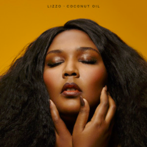
On Lizzo’s breakthrough single, she flaunts her confidence after breaking up with an unfaithful lover. Despite coming out in 2017, “Truth Hurts” gained traction after being included in the 2019 Netflix film Someone Great, and reached #1 on the Billboard Hot 100 in September 2019.
Lizzo told People that she considered quitting music after the song came out, but her family and collaborators encouraged her to continue with her career, allowing her to reap the benefits and watch the song become a hit.
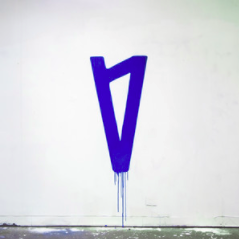
The song was started when Lauv moved to L.A. but originated when he moved to New York. He was 18 and had moved there for school. He fell in love for the first time.
On this track, Olivia O'Brien describes herself struggling under the pressure. This pressure was not only created by society, but also by herself.
In order to overcome this, she needs to care more for herself and eventually learn how to love herself.
Along with the release of this song, Olivia O'Brien has penned an open letter about her journey of self-love, published exclusively on Ladygunn.
‘'Love Myself’‘ is the last track on the album. This is done deliberately, as Olivia reveals to Paper Magazine:
Love myself comes last on my album because I want people to leave feeling better than they came.[…] I almost am tricking people into listening to happy music. We start off with the saddest and most emotional songs and slowly ease the listener into ending on a happy and uplifting note.
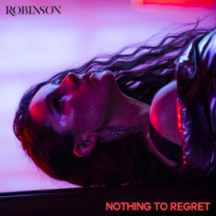
Nothing to Regret is about living for the weekend and just wanting to forget the stresses, worries and hardships in life. Dance it all away.
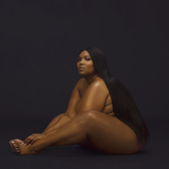
Lizzo’s hit song and video “Juice” continues her streak of feel-good singles about loving and being yourself. The song was released as the lead single for her third album Cuz I Love You.
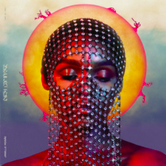
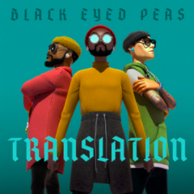
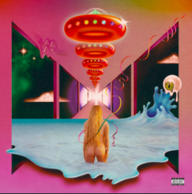
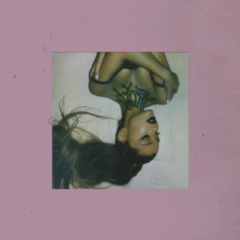
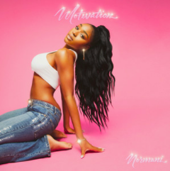
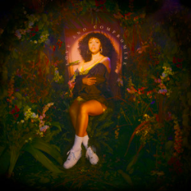
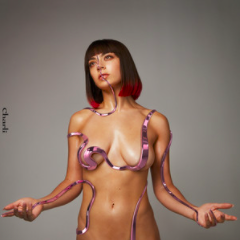
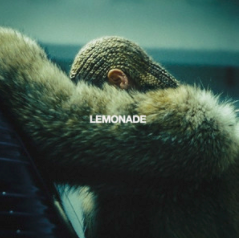
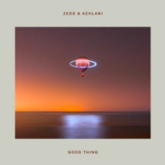